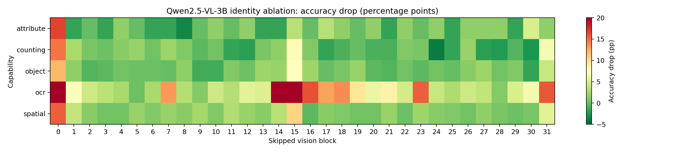
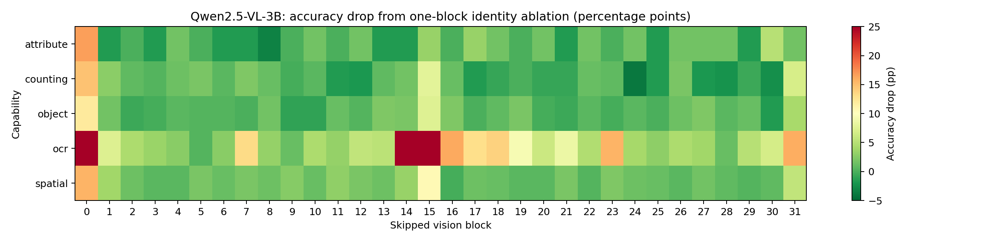

Five visual capabilities, controlled plus natural sources, deterministic scoring.
Research question
Not “which block stores OCR?”
The causal claim is deliberately narrower: when the image encoder bypasses a whole transformer block, which visual capabilities lose accuracy, and can a route chosen for one capability beat a generic route at the same number of removed blocks?
The project separates screening evidence, method-selection evidence, and sealed external evidence. A block sensitivity map alone is never treated as proof that a capability lives in one block.
All 32 vision-block identity interventions and a capability heatmap.
K4/K8/K12/K16 controls, locked-clock latency, and activation rescue.
Low-rank feature repair and interaction-aware K8 selection.
Source-balanced K4/K6/K8 generic and capability routes with matched controls.
Starting point
One model, one stable baseline
Baseline accuracy
81.62%1,480 discovery examplesVision latency
69.5 msmedian, batch size oneEnd-to-end latency
197.8 msmedian, greedy decodingPeak VRAM
8,318 MiBdynamic resolution pinnedModel: Qwen/Qwen2.5-VL-3B-Instruct. Vision tower: 32 blocks, approximately 668.7M parameters; full model: approximately 3.755B parameters.
Day 1: causal screen
Some blocks are catastrophic. “Safe” blocks do not compose.
Block 15 caused the largest overall isolated drop: +21.08 pp. The conservative screen found only block 28 below the pre-registered per-capability threshold, with an overall drop of +0.14 pp.
The next experiment showed why this is only a screen: independently low-impact blocks become harmful together, especially for OCR.


What failed and why it matters
Negative results narrowed the real question.
Independent K8 ranking
Task routes lost 10.18-37.30 points at K8. One-block effects are non-additive.
Final-boundary SVD repair
Feature L2 error fell, but answers did not reliably recover. Boundary similarity is not behavioral recovery.
Target-only beam search
Search accuracy looked good, then image-disjoint validation collapsed for object, OCR, and spatial routes.
Locked-clock K4
Four skipped blocks delivered 6.47-7.28% vision speedup but only 1.39-4.41% end-to-end speedup.
Activation rescue
Restoring a full hidden state after early skipped blocks partly recovered accuracy, supporting cumulative refinement over simple localization.
Evidence discipline
Failed ideas remain in the record, rather than being silently optimized away using the external test.
Feature repair diagnostic
| Route | Identity relative L2 | Rank-8 bridge | Rank-32 bridge |
|---|---|---|---|
| generic | 0.7283 | 0.5995 | 0.5995 |
| task-attribute | 0.7716 | 0.6149 | 0.6149 |
| task-counting | 0.7122 | 0.6650 | 0.6650 |
| task-object | 0.7246 | 0.6534 | 0.6534 |
| task-ocr | 0.8096 | 0.6599 | 0.6599 |
| task-spatial | 0.6874 | 0.6260 | 0.6260 |
Interaction-aware K8 validation
| Target capability | Search-selected blocks | Search drop | Target validation drop | Macro validation drop |
|---|---|---|---|---|
| attribute | [3, 6, 8, 9, 16, 20, 22, 25] | +3.00 pp | +3.19 pp | +15.58 pp |
| counting | [6, 9, 12, 21, 24, 25, 28, 30] | +1.00 pp | +5.06 pp | +18.24 pp |
| object | [2, 5, 9, 10, 17, 23, 25, 30] | -4.00 pp | +14.93 pp | +25.84 pp |
| ocr | [4, 5, 9, 11, 25, 26, 27, 28] | +18.00 pp | +23.53 pp | +12.00 pp |
| spatial | [3, 10, 16, 19, 22, 26, 28, 29] | +3.00 pp | +15.19 pp | +20.82 pp |
Sealed external evaluation
Capability effects exist. Universal task routing did not win.
The 1,250-example external suite used unseen source families and was frozen before inference. It is now consumed and is not used by the current route search.
| Condition | Accuracy | Full-model drop | attribute | counting | object | ocr | spatial |
|---|---|---|---|---|---|---|---|
| full | 74.96% | +0.00 pp | +0.00 pp | +0.00 pp | +0.00 pp | +0.00 pp | +0.00 pp |
| generic-k8 | 66.00% | +8.96 pp | -0.80 pp | +8.00 pp | +5.20 pp | +25.60 pp | +6.80 pp |
| task-k8 | 64.72% | +10.24 pp | +0.80 pp | +19.20 pp | +8.40 pp | +22.40 pp | +0.40 pp |
| task-k4 | 68.08% | +6.88 pp | +0.40 pp | +18.40 pp | +3.20 pp | +10.80 pp | +1.60 pp |
At matched K8, the old conditional policy trailed generic pruning by -1.28 pp, with paired 95% interval [-3.60, 0.96] pp.
Spatial was the clear exception: conditional K8 beat generic K8 by +6.40 pp. Counting was the strongest failure at -11.20 pp.
Current final stage
Source-balanced route search and matched-K controls
The final search freezes the data manifests, optimizer budget, route priors, and objectives before inference. It uses separate generic and capability-specific families at K4, K6, and K8, then compares them with independent ranking, contiguous deletion, and three random controls.
| Budget | Full | Evolved generic | Evolved task policy | Task minus generic | Paired 95% interval | Generic independent | Task independent | Contiguous | Random mean |
|---|---|---|---|---|---|---|---|---|---|
| K4 | 83.68% | 81.28% | 81.39% | +0.11 pp | [-1.83, 2.05] pp | 80.25% | 81.28% | 79.91% | 72.37% |
| K6 | 83.68% | 79.11% | 81.28% | +2.17 pp | [0.00, 4.34] pp | 78.08% | 77.51% | 68.26% | 64.80% |
| K8 | 83.68% | 75.91% | 76.60% | +0.68 pp | [-1.71, 3.08] pp | 72.37% | 68.15% | 40.98% | 46.96% |
Interpretation: K4 has no clear overall advantage between evolved task and generic routes. K6 has no clear overall advantage between evolved task and generic routes. K8 has no clear overall advantage between evolved task and generic routes. This is image-disjoint method-selection evidence, not a replacement for an untouched external source-transfer evaluation.
K4: capability comparison
| Capability | Evolved task | Evolved generic | Task minus generic | Paired 95% interval |
|---|---|---|---|---|
| attribute | 95.78% | 95.78% | +0.00 pp | [-3.01, 3.01] pp |
| counting | 72.93% | 72.93% | +0.00 pp | [-4.97, 4.97] pp |
| object | 86.53% | 84.97% | +1.55 pp | [-1.55, 5.18] pp |
| ocr | 72.26% | 73.55% | -1.29 pp | [-7.10, 4.52] pp |
| spatial | 79.01% | 79.01% | +0.00 pp | [-4.42, 4.42] pp |
K6: capability comparison
| Capability | Evolved task | Evolved generic | Task minus generic | Paired 95% interval |
|---|---|---|---|---|
| attribute | 93.37% | 92.17% | +1.20 pp | [-3.01, 5.42] pp |
| counting | 74.59% | 73.48% | +1.10 pp | [-3.87, 6.63] pp |
| object | 87.56% | 87.56% | +0.00 pp | [-3.11, 3.11] pp |
| ocr | 70.97% | 63.87% | +7.10 pp | [0.65, 14.19] pp |
| spatial | 79.01% | 76.80% | +2.21 pp | [-2.21, 6.63] pp |
K8: capability comparison
| Capability | Evolved task | Evolved generic | Task minus generic | Paired 95% interval |
|---|---|---|---|---|
| attribute | 91.57% | 93.37% | -1.81 pp | [-5.42, 2.41] pp |
| counting | 69.06% | 69.06% | +0.00 pp | [-5.52, 5.52] pp |
| object | 84.97% | 83.94% | +1.04 pp | [-3.63, 5.70] pp |
| ocr | 58.06% | 55.48% | +2.58 pp | [-4.52, 9.68] pp |
| spatial | 77.35% | 75.69% | +1.66 pp | [-3.31, 7.18] pp |
Research context and next decision
The novelty bar changed while the experiments ran.
Short-LVLM already studies generic training-free VLM layer localization and feature-gap compensation. INTERLACE already studies structure-aware layer pruning with efficient adaptation. A March 2026 domain-aware decoder-pruning study reports that low budgets are ranking-sensitive while higher budgets become structure-limited.
This project therefore does not claim generic task-aware pruning as new. Its useful question is whether a separate vision encoder has source-stable capability routes under no fine-tuning, matched block budgets, and explicit collateral-damage controls.
Full protocols, configs, manifests, decision logs, and compact results are linked from the repository README. Raw predictions and images are intentionally excluded from Git because they are large and/or licensed datasets.